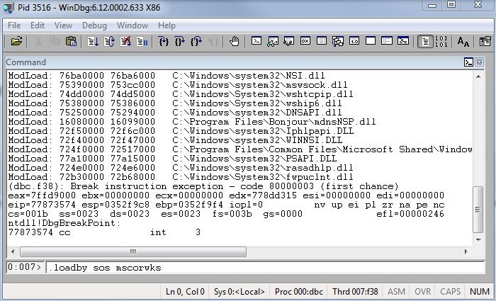

Software vulnerabilities are everywhere. Many companies these days are in need of security professionals to help identify if any vulnerabilities exist in their software. This is a crucial component to the company’s infrastructure. If their software is left vulnerable, hackers can gain access and cause harm. In this article, we will be discussing the two main types of vulnerabilities. The first one is vulnerabilities in the software itself. This can range from race conditions to buffer overflows. The next type of vulnerability is during the configuration. This includes cases where users did not select the appropriate/secure options during set-up. This tends to happen often with people who aren't aware of technological standards. An example can include displaying user data publicly without the user knowing they authorized it.
Before diving into cases of exploits, what are vulnerabilities and exploits? A vulnerability essentially refers to a weakness in a system. An exploit is the act of taking advantage of a vulnerability. These two go hand-in-hand when talking about computer security. A major component of cybersecurity involves exploit testing and vulnerability analysis. This includes tools such as WinDbg.
The Windows Debugger (WinDbg) is a multipurpose tool used to debug user and kernel mode code. It can also analyze crash dumps and examine CPU registers while executing code. This tool can also be used to analyze stack buffer overflow and use after free attacks.
In lab, WinDbg was used to analyze a browser based attack utilizing a JavaScript file containing shell-code. Using WinDbg, the user can figure out where their shell code exists and where it needs to be placed on the stack so it can be executed. This involves thoroughly understanding where the crash took place (setting a break-point) and the status of the registers. Through clever tricks such as figuring out where ESP “JMP” statements are, one can gain control of a program - and ultimately run their own code. Below is an example displaying information after a breakpoint.
A very infamous exploit in the cyber world are stack-based buffer overflow attacks. However, in the recent years there has been a great deal of defense on mitigating these types of attacks. Application developers to hardware manufacturers are becoming more aware of these attacks and are changing their strategies.
To first understand these attacks, it is important to understand the basics of computer memory. A buffer is essentially a temporary area used for data storage. When more data is allocated to a buffer than it can actually hold, data can leak into other buffers – buffer overflow. The attack therefore takes advantage of this concept, where a hacker can use the extra overflowing data to harm the system. This can include revealing private information to altering data itself. Generally, this method of attack depends on a user’s input. This represents the stack where memory is used to store users input. In lecture, the example used was starting the Windows default calculator app via the browser.
The Use-After-Free attack, as the name mentions, attempts to take access of memory after its been freed. A hacker can replace the freed memory with malicious code and can use that memory to cause harm. This attack is common in web-browsers. Google Chrome version 72.0.3’ was found to be susceptible to this attack. Clement Lecigne, a security engineer at Google, discovered this exploit and reported it to the company. A patch fix was rolled out quickly and an update was available to all users. Microsoft Internet Explorer also received several security patches regarding this vulnerability. This just goes to show the amount and severity of these attacks. Though it may not seem apparent at first, these attacks can cause serious damage and harm to the company over time. As hackers are becoming more intelligent in the ways they can intrude a system, it is important for security personnel to stay one step ahead of them at all times.